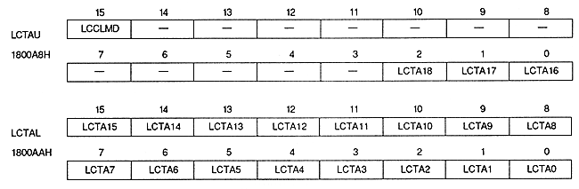

Line color screen color mode bit : LNCL color mode bit (LCCLMD), bit 15
| LCCLMD | Line color screen color |
| 0 | Make a single color |
| 1 | Specify line by line |
| LCTA18 to LCTA16 | 1800A8H | bits 2 to 0 | < | |
| LCTA15 to LCTA0 | 1800AAH | bits 15 to 0 |
The actual top VRAM address is calculated using the following formula. If the VRAM capacity is 4M bits, the most significant bit of the address is ignored.
(Line color screen table start address) = (Line color screen table address register value 19 bits) × 2H